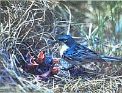
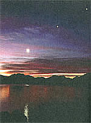

SEASONS
Welcoming the adolescent season .
April and May are the heart of spring. The mathematical halfway point of the season is May 6; this is the point when Earth is between the March equinox and the June solstice positions in its orbit. But of course where you are in the U.S., Canada, or elsewhere in the northern temperate latitudes of our world will affect when the weather, fauna, and flora around you tell you that spring has truly arrived. Spring is really even more complicated, of course. It comes and goes at first, like a bird looking for a nesting spot, until it decides to stay.
Edwin Way Teale's book North with the Spring remains a classic account of spring. One memorable chapter in it is "A Hundred Miles of Warblers." Ludlow Griscom, "Harvard's famed field ornithologist", at his prime in the first half of the 20th century, had told Teale: "Be near Asheville, North Carolina, the third week in April and you will see the warblers pour across the mountains." Griscom's forecast proved correct and in one day, Teale and his wife drove one hundred miles, beholding "warblers, pockets of warblers, trees swarming with warblers, warblers beyond count." Nearly a third of all species of warblers are found east of the Rockies. Teale noted redstarts, ovenbirds, prairie warblers, chestnut-sided warblers, yellow warblers, Maryland yellowthroats, myrtle warblers, hooded warblers, parula warblers, magnolia warblers, black-throated blue warblers, and many other kinds of warbler - each species in the finest of its full plumage, each distinguished by particularities of call and behavior.
As almost everyone who has pursued binding beyond a backyard feeder knows, the warblers are special treats of the binding world. Many of them appear extremely similar when seen in a flitting instant by the unknowing eye - especially in fall, when the males' plumage is much duller and much more similar to that of other warblers. Yet delve deeper and learn the songs, habits, and lives of these birds and they - or at least their particular species - again become individual.
The more rare something is, and more fragile, the more precious we may hold it to be. Since Teale's trip "north with the spring" in 1947, the warbler populations have been, and continue to be, decimated. The biggest problem may still be destruction of these birds' winter habitats in the tropics. And some of them have very specialized diets and other needs whether in their winter or summer homes. For instance, Kirtland's warbler nests nowhere else in the world but in the jack pine forests in a region of north central Michigan that is about 60 miles by 100 miles wide. Apparently, unlike many warblers, it is neither elusive nor shy. Much more rare - the rarest of North American songbirds, infact - is Bachman's warbler. If you saw one, it would probably be in the Southeast.
By the way, few of the warblers really warble. As British ornithologist James Fisher noted, their "cheerful noises" include "buzz and tinkle, shirr and twitter, stutter and trill." In Houghton-Mifflin's recently reissued (and superb) book Wild America, by Fisher and Roger Tory Peterson, the former observes about the warbler calls and songs:
Regular, irregular, explosive, lazy, soft, wiry, their voices make me a confused catalogue, with bee and buzz and bz; char, chee, churn, errr; me, miss; orrr; sar, see sir, switch; teach, tea, ti, tiz, teet, to, tory, tsee, tseet, tweet; up; way, wee, weet, which, wi, wont, woods; you; zee, zh, zhee, zi, zip, zit, zray, zree, zur.
Many of the wood warblers (family Parulidae ) migrate through - or spend summers in - only the eastern half of the U.S., but there are some which are more widely distributed, and some which are western specialties. In parts of the U.S. west of the Rockies (in some cases, all the way to the Pacific Coast), you might see orange-crowned warbler, Nashville warbler, olive warbler, Virginia's warbler, Lucy's warbler, yellow warbler, myrtle warbler, Audubon's warbler, Townsend's warbler, hermit warbler, black-throated gray warbler, Grace's warbler, yellowthroat, yellow-breasted chat, MacGillivray's warbler, Wilson's warbler, and maybe American redstart. So, wherever you live, why not keep an eye and ear out for these special gems of the avian world in April or May?
There's no doubt that April and May are like the adolescence and very young adulthood of the year. They are filled with passion and energy, sometimes beautiful and creative, but sometimes destructive.
The most long-lasting and deadly tornado ever to occur in the U.S. happened in the latter part of March. But most of the worst tornadoes, and the maximum numbers of tornadoes, and the greatest outbreak of numerous tornadoes ever, all occurred in April and May. March is known for its wind, but the greatest wind gust ever directly recorded (higher gusts have been reliably estimated in tornadoes) was one of 231 mph on top of Mt. Washington in New Hampshire in April.
March certainly has greater variations in temperature, and this can produce the biggest of all blizzards. In March, you can have forsythias one day and four - or forty - inches of snow the next. On the other hand, a day in April or May can bring you both vortexes and violets. March finds it hard to settle down. April and May bring us some of the softest zephyrs, and the most tranquil mornings and afternoons, to contrast with their outbreaks of severe weather.
I've been an avid amateur astronomer since I was a young child, and thus for over three decades now. But in all that time, I cannot think of there having been a tighter bunching of the night's three brightest objects than what some Americans will get to see before dawn on April 23. The brilliant planet Venus and second-brightest planet Jupiter approach each other for the first twenty-one days of April, then are closest together on the mornings of April 22 and 23. On the latter date, the crescent Moon moves in to skirt just past their paired pulchritude for a truly majestic sight.
I don't lightly urge people to get up at 5 A.M. because I know how difficult that is for many of us. But if your skies are clear that morning of April 23, you really should set your alarm clock and get up. Virtually no astronomical sight draws public attention and admiration more than a close conjunction of the Moon and Venus. Notice how many nation's flags around the world bear a crescent and star - perhaps inspired by Moon-Venus conjunctions. But add Jupiter to the conjunction and you have a knot of brilliance which should be more prominent than any event of this sort you've ever imagined.
The three objects rise around roughly 4:30 A.M. (daylight saving time), which at most U.S. latitudes also marks the start of the very first subtle traces of morning twilight. The Sun doesn't rise until well after 6 A.M. for most of us that day, though, so the Moon and two planets will have a chance to get a respectable distance above the horizon before dawn starts washing out the east sky. Furthermore, the Moon and Venus are so bright that as long as the day comes with a nice blue sky, you shouldn't have much trouble finding them both with the naked eye even a few hours after sunrise. Use the Moon as guide to Venus. As a matter of fact, under very good conditions, the naked eye can glimpse Jupiter for more than 20 or 30 minutes after the Sun first peeks above the horizon.
There's something important to note, however. The later it gets, the farther the Moon will be away from the two planets. Indeed, by the time these objects rise as seen from the West Coast, the Moon will have moved several of its own diameters farther away from Venus and Jupiter. Don't despair, however: the sight will still be marvelous. The best view in the U.S. will be from the East Coast soon after the objects come up; 5 to 5:30 A.M. may be the best period for the average person to look. What will be visible then and there should be Venus and Jupiter separated by only half a degree and the Moon centered only about one-and-a-half degrees below both of them. This means that a person's finger held out at arm's length may be able to hide all three of these celestial lamps at once. That's how close together they'll be.
Indeed, farther east and south - in parts of Brazil, the South Atlantic, and Africa - the Moon-Venus-Jupiter conjunction is even more spectacular. From these regions, there will be a time when the Moon is actually directly in front of both of the two brightest planets! From parts of the latter two regions, it will be possible to see four events - each of the two planets disappearing behind the Moon, each of the two planets reappearing from behind the Moon - before sunrise.
Suppose you have the bad luck to be clouded out on April 23. Just look the morning before or after. And keep an eye out for some of the other pretty conjunctions of April and May 1998. For instance, Venus and Saturn are within three degrees of each other at dawn from May 26 to 31. On the morning of May 29, Venus and Saturn are less than half a degree apart. With a small telescope you could see both planets' globes, as well as Saturn's rings, in the same field of view.
APRIL
1 All Fools' Day.
2 Mars near Saturn at dusk, but too near Sun to see clearly; Pascua Florida Day; this day in 1959, NASA chose the original seven Mercury astronauts.
3 FIRST QUARTER MOON, 3:18 P.M. EST; in 1966, Luna 10 became first spacecraft to orbit the Moon.
4 In 1902, a skinny - just 40-foot-wide - waterspout hit the S.S. Hestia but no one was injured; in 1966, two tornadoes crossed central Florida all the way from coast to coast - Tampa Bay to Cape Canaveral - covering the 140 miles at 60 mph.
5 Palm Sunday; set clocks ahead 1 hour ("spring forward") to change from standard to daylight saving time.
10 Good Friday.
11 First day of Passover; FULL MOON (Grass Moon or Egg Moon), 6:23 P.M. EDT.
12 Easter; Astronomy Day (25th anniversary of its inception); first man in space (Yuri Gagarin, 1961).
13 Saturn at conjunction with the Sun and therefore unviewable; Thomas Jefferson's Birthday (celebrated in Alabama and Oklahoma); launch of the ill-fated Apollo 13 in 1970.
14 Apollo 13 explosion; Abraham Lincoln shot by John Wilkes Booth in 1866.
15 Titanic sunk by an iceberg, 1912.
17 Venus very near a star in Aquarius before dawn (use binoculars to see the star next to Venus, brightest point of light by far in the sky); Venus and second-brightest planet, Jupiter, noticeably closer together in sky each day until April 22 and 23.
18 Sun enters constellation Aries, 9 P.M. EDT.
19 Jupiter very near a star in Aquarius before dawn (use binoculars to detect the star); LAST QUARTER MOON, 3:53 P.M. EDT; Orthodox Easter.
20 Sun enters the astrological sign Taurus, 3 A.M. EDT; Patriots Day (in Maine and Massachusetts); Earth Day.
21 This evening and tomorrow evening, look for Lod meteors from northeast before middle of the night moonrise.
22 Set your alarm clocks to get up and see tomorrow's great conjunction before dawn.
23 Spectacular Moon-Venus-Jupiter conjunction (see text)!
24 National Arbor Day; Nabonassar Era year 2747 begins.
25 The Hubble Space Telescope was first deployed in orbit (by Space Shuttle astronauts) this day in 1990; in 1983, a strong mountain wave allowed Thomas Knauff to pilot his glider non-stop from Williamsport, PA to North Carolina and back - a world record distance of 1,023 miles.
26 NEW MOON, 7:41 A.M. EDT.
28 Muslim New Year - actually starts at sunset of previous day (first day: 1 Muharram of the year 1419 A.H.).
30 May Eve.
May
1 May Day; Beltane.
3 FIRST QUARTER MOON, 6:04 A.M. EDT.
4 Mercury at greatest morning elongation but low, poor for Northern Hemisphere observers; in 1761, a tornado became a waterspout and sank five British warships in the river at Charleston, SC.
5 Cinco de Mayo; first American in space (Alan Shepard, 1961).
6 After moonset and before dawn, a number of Eta Aquarid meteors may be seen at country locations (these "shooting stars" are debris from Halley's Comet); halfway point of spring.
7 Lusitania sunk by German torpedoes, 1915.
8 V-E Day in 1945; Truman Day (celebrated in Missouri).
10 Mother's Day; Jupiter passes very near a star (use binoculars to see the star near Jupiter, which is now well to the upper right of brighter Venus before dawn).
11 FULL MOON (Milk Moon or Planting Moon), 10:29 A.M. EDT.
12 Mars at conjunction with the Sun, and therefore unviewable; Mercury near Saturn but both too low in dawn sky to glimpse easily.
14 Sun enters constellation Taurus, midnight; Skylab launched into space in 1973.
16 Armed Forces Day.
17 Rogation Sunday.
18 Victoria Day (in Canada).
19 LAST QUARTER MOON, 12:35 A.M. EDT.
21 Ascension Day; Sun enters astrological sign Gemini, 2 A.M. EDT.
25 Memorial Day (observed); NEW MOON, 3:32 P.M. EDT.
28 This morning and especially tomorrow morning, Venus very close to Saturn in the east before dawn; Pluto at opposition, closest, and brightest for year (but still too dim to be seen in less than a medium-size telescope).
29 Oak Apple Day in England.
30 Memorial Day (traditional date).
31 Whitsunday (Whitsun Day or Whitsun) - is the-seventh Sunday (50th day inclusive) after Easter; Pentecost; Shavuot.
|
 Kirtland's warbler nests in north- central Michigan. |
 Venus and Jupiter line up along the ecliptic at dawn over Saguaro Lake, AZ. |
|